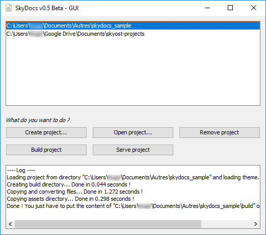

Documentation
This documentation has been created for SkyDocs v0.7.3 Beta. Don't forget to update it (there is a guide below) !
Downloading & installing
Here are the steps to download and install the software.
Downloading
First, you need to have Java installed. If you don't have it, then you can download it here.
Then you can download the latest version of SkyDocs here. Unzip the file where you want and that's it !
Development builds
Development builds of this project can be acquired at the provided continuous integration server. You can download the latest dev build here.

Creating a new project
To create a new project, go to the SkyDocs directory and run the command java -jar SkyDocs.jar new [directory].
This will create a brand new project in the specified directory. If you don't specify a directory, the current location will be used instead.
You can also manually create a new project : first create a directory and create a file named project.yml and configure it as you want (below are the available options), then create a menu.yml file (check below to see how to configure it). You also need to create a directory named content (this is where you put your pages, images, ...). That's it !
Configuration
Once created, you have to configure your new project. Here's how to do it.
First, open the file project.yml, it contains your project data under an Yaml syntax. Here are the different keys with their corresponding description :
| Key | Type | Required | Default value | Description |
|---|---|---|---|---|
| project_name | string | no (but advised) | My Documentation | Your documentation title. |
| project_description | string | no (but advised) | Documentation built with SkyDocs | Your documentation description. |
| project_url | string | no (but advised) | https://skydocs.skyost.eu | Your hosted documentation URL address. |
| default_language | string | no | en | Your documentation default language. |
| enable_lunr | boolean | no | false | If you set this value to true, SkyDocs will include a search.html page which takes a GET parameter named keywords. You have to send your keywords to this page, and lunr will process it and will show you a list of accurate pages. |
| enable_less | boolean | no | true | If you set this value to true, SkyDocs will parse and handle LESS files. If enabled, the more LESS files you have, the longer it will take time to build your project. |
| default_order_alphabetical | boolean | no | false | If you set this value to true, the software will order your page alphabetically (according to their file name). page.getPreviousPage() and page.getNextPage() will return values according to this order (if the corresponding header keys are not set). |
Next, open the file menu.yml. It contains some menu entries :
| Key | Type | Required | Description |
|---|---|---|---|
| title | string | yes | Title of the entry. |
| link | string | no | Link attached to the menu. |
| weight | integer | no | A page with a lower weight will be put before a page with a higher weight. |
| new_tab | boolean | no | If sets to true, target="_blank" will be appended to the link. |
| children | list of menu entries | no | Contains the sub-entries of this menu entry. |
Adding pages
If you want to add pages, images, videos, etc... head to the content directory. It is recommended to create a subdirectory per language (so for example if your website has two languages : English and French, create two directories en and fr).
Now, say that we want to create an english page named Hello with some content, for instance :
---
title: "Hello"
language: "en"
---
# Hello
Nice website uh ?
**Warning ! This text will be BOLD.**
The first lines are the header, you can only put two things here : the title (title) and the language of the page (language).
You can enter every parameter you want. Reserved words are title for the title, language for the language, previous for the previous page and next for the next page.
Feel free to play with all these values !
Warning ! In a menu, you can only put a language (language).
Build your documentation
When you have finished configuring your documentation, you are ready to build it !
To automatically build the documentation, run the file build.bat (or build.sh). To serve it on localhost, run the file serve.bat (or serve.sh).
Those files are created when you create a new project via the command java -jar SkyDocs.jar new [directory].
You can also manually build your documentation with the command : java -jar SkyDocs.jar build [directory] (if you omit the directory, SkyDocs will try to build
the project contained in the current directory).
To manually serve your documentation on localhost, run this command : java -jar SkyDocs.jar serve [directory] [port] (as always, if you omit the directory,
SkyDocs will try to build the project contained in the current directory). The default port is 4444.
Commands
The table below lists the available commands in SkyDocs. You can use them with the JAR java -jar SkyDocs.jar command <arguments> or the executable SkyDocs command <arguments>.
| Syntax | Default value | Description |
|---|---|---|
new -directory [directory] | directory : current directory | Creates a new documentation in the specified directory. |
build -directory [directory] | directory : current directory | Builds the documentation located in the specified directory. HTML, CSS and JS will be minified, therefore compil time will be bigger than with serve. |
serve -directory [directory] -port [port] -manualRebuild [true/false] | directory : current directory port : 4444 manualRebuild : true | Builds the documentation located in the specified directory and serve it on localhost with the specified port. No minification. |
update | Checks for updates. | |
help -command [command] | command : all | Shows the available commands with their description. |
gui (or nothing) | Launches the GUI. |
Please note that CSS and JS files will be minified when you run the build command. They will not be minified with the serve command.
GUI

As of v0.5, SkyDocs comes with a GUI ! As you can see, it is pretty self-explanatory : you can open your projects, build them, serve them, etc...